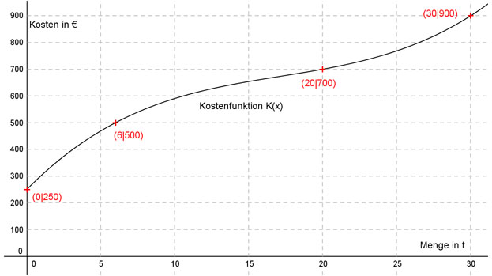

Aufgabe 135 Die Produktion eines Lebensmittels findet unter folgenden betrieblichen Bedingungen statt: Menge in t 0 6 20 30 Kosten in € 250 500 700 900 Wieviel kosten 25 t, wenn die Kostenfunktion 3. Grades und ganzrational ist?  Allgemeine Form einer ganzrationalen Kostenfunktion 3. Grades: K(x) = ax3 + bx2 + cx + d K’(x) = 3ax2 + 2bx + c K’’(x) = 6ax + 2b 4 Bedingungen: 1. 0 t kosten 250 € bedeutet: K(0) = 250 --> a * 03 + b * 02 + c * 0 + d = 250 --> d = 250 2. 6 t kosten 500 € bedeutet: (d = 250 eingesetzt) K(6) = 500 --> a * 63 + b * 62 + c * 6 + 250 = 500 --> 216a + 36b + 6c + 250 = 500 |-250 216a + 36b + 6c = 250 I 3. 20 t kosten 700 € bedeutet: (d = 250 eingesetzt) K(20) = 700 --> a * 203 + b * 203 + c * 20 + 250 = 700 --> 8000a + 400b + 20c + 250 = 700 |-250 8000a + 400b + 20c = 450 II 4. 30 t kosten 900 € bedeutet: (d = 250 eingesetzt) K(30) = 900 --> a * 303 + b * 302 + c * 30 + 250 = 900 --> 27000a + 900b + 30c + 250 = 900 | -250 27000a + 900b + 30c = 650 III I * (-5) + III -1080a - 180b - 30c = -1250 27000a + 900b + 30c = 650 ---------------------------- 25920a + 720b = -600 IV II * (-3) + III * 2 -24000a - 1200b - 60c = -1350 54000a + 1800b + 60c = 1300 ------------------------------ 30000a + 600b = -50 V IV * (-5) + V * 6 -129600a - 3600b = 3000 180000a + 3600b = -300 ------------------------ 50400a = 2700 |:50400 2700 3 a = --------- = ---- 50400 56 a = 3/56 in V eingesetzt: 30000 * 3/56 + 600b = -50 90000/56 + 600b = -2800/56 |-90000/56 600b = -92800/56 |:600 92 800 58 b = - ----------- = - ---- 56 * 600 21 a = 3/56 und B = -58/21 in I eingesetzt: 216 * 3/56 - 36 * 58/21 + 6c = 250 81/7 - 636/7 + 6c = 250 -615/7 + 6c = 1750/7 |+615/7 6c = 2365/7 |:6 2365 2365 c = ------- = ------ 7 * 6 42 Gesuchte Kostenfunktion: K(x) = (3/56)x3 - (58/21)x2 + (2365/42)x + 250 K(25) = (3/56) * 253 - (58/21) * 252 + (2365/42) * 25 + 250 K(25) = 768,60 €